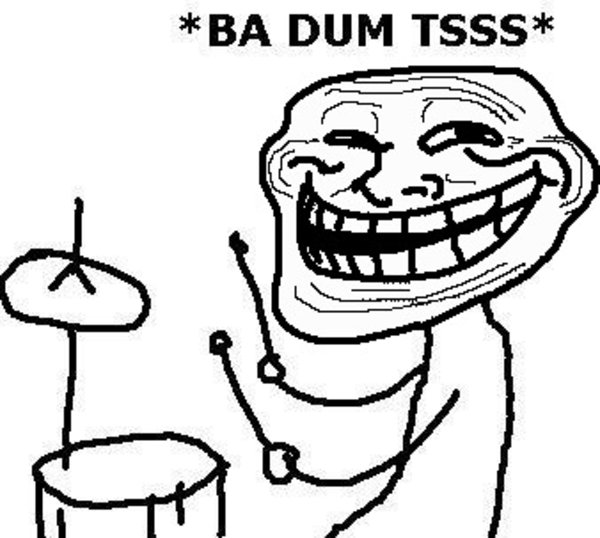
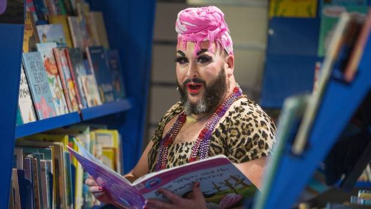
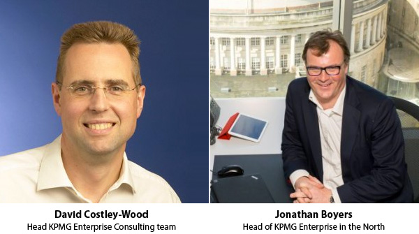

KPMG - Record Fine for Conflict of Interest
June 29th, 2021
Financial Times:
TDC_ARTICLE_START
KPMG faces a record fine of more than £15m after advising bed manufacturer Silentnight on the sale of its business despite the accountant’s “conflict of interest” with the buyout fund that bought it.
An independent tribunal found that KPMG and one of its partners failed to comply with the fundamental principles of objectivity and integrity in their work on the sale of Silentnight to US private equity firm HIG Capital in 2011, a hearing was told on Monday.
TDC_ARTICLE_STOP

Faggot Michael Bach, former "head of Diversity and Equity" at KPMG
This ties into the article I wrote a few days ago on "Globo Homo Schlomo Accountants" where I detailed KPMG's celebration of boy hungry pedophiles, and delved deep into Michael Bach himself. Although not as deep as his boyfriends do I'm sure.

TDC_ARTICLE_START
The findings followed a case in which the Financial Reporting Council, the UK audit regulator, argued that KPMG had helped HIG force the insolvency of UK-listed Silentnight so it could acquire the company without the burden of its £100m pension scheme.
The gravity of the findings against KPMG and David Costley-Wood, the partner who advised Silentnight on the sale, “sit at the top end” of those that can be made by the tribunal, Richard Coleman QC for the FRC told the hearing. The tribunal’s decision has not been published but its principal draft findings were read out by Coleman.
TDC_ARTICLE_STOP
But they support this... so go fuck yourself.
Yeah but they support child trannies though? So what's the problem? Are you telling me there's something wrong with deliberately fucking over pensioners just to put money in your pocket? I mean sure, those people spent their entire lives working for that, but KPMG supports perverts ramming cocks up each others asses at the office.
I'm just so sick and tired of these morally inferior normal people demanding to not get financially raped by morally superior international finance. Fucking disgusting.
TDC_ARTICLE_START
It found that Costley-Wood and KPMG had failed to consider if there was any threat to their objectivity or whether the interests of HIG and Silentnight might be in conflict, Coleman said. It found that a motivating factor for the misconduct was “the desire to keep HIG onside” as a potential client, he added.
The tribunal also found that Costley-Wood demonstrated a lack of objectivity by dishonestly assisting with the provision of untrue or materially incomplete statements to Silentnight, the pensions trustees, the Pension Protection Fund and The Pensions Regulator as to the causes of Silentnight’s financial difficulties, he said.
KPMG was paid almost £1.6m for its work on the Silentnight engagement but since 2010 it has received more than £8.5m from HIG and companies in which the fund has invested, the hearing was told. HIG still holds an interest in Silentnight, which reported a pre-tax loss of £888,000 off sales of £133.9m in the year to February 2020.
TDC_ARTICLE_STOP

But... these guys support mass migration, racial discrimination against Whitey, jew nationalism, including the ethnic cleansing of those filthy Palestinian Goy Cattle, hate speech laws, adult trannies, child trannies, and the rest. I mean, why is that? Why do we never see these thieving shitbag corporations supporting the politics of truckers?
It's almost like Pervertism is the politics of the parasite class. It's almost like that, because it is that.
 Always remember, the people who support the above, also support thieving money from pensioners. And always remember the reverse. The people who support thieving money from pensioners, support child trannies.
Always remember, the people who support the above, also support thieving money from pensioners. And always remember the reverse. The people who support thieving money from pensioners, support child trannies.
Always remember, the people who support the above, also support thieving money from pensioners. And always remember the reverse. The people who support thieving money from pensioners, support child trannies.